2710A35 intermediate drive shaft mount - r r
- Path
- Procedures > 27 AXLE > 2710 FRONT AXLE > 2710A drive shafts and joints > 2710A35 intermediate drive shaft mount - r r
- Kind
- repair procedure (removal / refitting; the operation number is the code)
- Applies to
- engines: 1.6 TS, 3.2 V6, 1.9 JTD 8V, 1.9 JTD 16V; all production periods
- Interactive page
- https://sloeber94.github.io/elrnDB-a147/en/#/3025187
Applies to: engines: 1.6 TS; all production periods
 Removing
Removing
 Refitting
RefittingProceed with the removal 4450B10 Front WHEEL (one) - R.R. (Right side).
Proceed with the removal 7055B64 Engine compartment DUST shield in front wheel arch (one), left or right - R.R. (Right side).
Proceed with removal 4410A80 damper lower fork - r r .
Proceed with removal 2710A31 intermediate drive shaft - r r .
Proceed with removal 1092G10 single engine belt r r .
Proceed with removal 1072C44 exhaust manifold heat shield on bulkhead - r+r
Applies to: engines: 1.6 TS; all production periods; only with equipment: 103 CV
Proceed with removal 1080B62 catalytic converter - r + r .
Applies to: engines: 1.6 TS; all production periods; only with equipment: 120 CV
Proceed with removal 1080B40 catalytic pre-converter - r r .
Applies to: engines: 1.6 TS; all production periods
Proceed with removal 2710A32 intermediate drive shaft bearing support - r + r with intermediate drive shaft removed .
Applies to: engines: 1.6 TS; all production periods
Refitting
RemovingProceed with refitting 2710A32 intermediate drive shaft bearing support - r + r with intermediate drive shaft removed .
Applies to: engines: 1.6 TS; all production periods; only with equipment: 120 CV
Proceed with refitting 1080B40 catalytic pre-converter - r r .
Applies to: engines: 1.6 TS; all production periods; only with equipment: 103 CV
Proceed with refitting 1080B62 catalytic converter - r + r .
Applies to: engines: 1.6 TS; all production periods
Proceed with refitting 1072C44 exhaust manifold heat shield on bulkhead - r+r .
Proceed with refitting 1092G10 single engine belt r r .
Proceed with refitting 2710A31 intermediate drive shaft - r r .
Proceed with refitting 4410A80 damper lower fork - r r .
Proceed with the refitting 7055B64 Engine compartment DUST shield in front wheel arch (one), left or right - R.R. (Right side).
Proceed with the refitting 4450B10 Front WHEEL (one) - R.R. (Right side).
Applies to: engines: 3.2 V6; all production periods
Removing
RefittingDrain the air conditioner coolant circuit 5040A10 Air conditioning refrigerant CIRCUIT - Draining and Refilling .
Proceed with removal 4450B04 right front wheel r r .
Proceed with removal 7055B54 under-engine guard - r r .
Proceed with removal 7055B64 Engine compartment DUST shield in front wheel arch (one), left or right - R.R. .
Proceed with removal 7055B42 Additional FRONT WHEEL ARCH (one), left or right - R.R. .
Proceed with removal 7210E10 R.R. CENTRE PILLAR .
Proceed with the removal 5540B76 Front LIGHT CLUSTER with fog light (one), left or right - R.R. with interfering components removed (Right and left sides).
Proceed with removal 7025A34 bonnet lid lock (one) - r+r or repair .
Proceed with removal 7210A15 R.R. HEADLAMP HOUSING/FRONT WING CROSSMEMBER .
Proceed with removal 1076B82 left exhasust pipe between catalytic preconverter and converter r r .
Proceed with removal 1076B84 right exhaust pipe between caralytic preconverter and converter r r .
Proceed with removal 1080B39 right catalytic preconverter r r or replace cylinder head gasket .
Proceed with removal 4410A80 damper lower fork - r r .
Proceed with removal 2710A31 intermediate drive shaft - r r .
Proceed with removal 1084B34 cartridge engine oil filter support - r + r .
Applies to: engines: 3.2 V6; all production periods
Refitting
RemovingProceed with refitting 1084B34 cartridge engine oil filter support - r + r .
Proceed with refitting 2710A31 intermediate drive shaft - r r .
Proceed with refitting 4410A80 damper lower fork - r r .
Proceed with refitting 1080B39 right catalytic preconverter r r or replace cylinder head gasket .
Proceed with refitting 1076B84 right exhaust pipe between caralytic preconverter and converter r r .
Proceed with refitting 1076B82 left exhasust pipe between catalytic preconverter and converter r r .
Proceed with refitting 7210A15 R.R. HEADLAMP HOUSING/FRONT WING CROSSMEMBER .
Proceed with refitting 7025A34 bonnet lid lock (one) - r+r or repair .
Proceed with the refitting 5540B76 Front LIGHT CLUSTER with fog light (one), left or right - R.R. with interfering components removed (Right and left sides).
Proceed with refitting 7210E10 R.R. CENTRE PILLAR .
Proceed with refitting 7055B42 Additional FRONT WHEEL ARCH (one), left or right - R.R. .
Proceed with refitting 7055B64 Engine compartment DUST shield in front wheel arch (one), left or right - R.R. .
Proceed with refitting 4450B04 right front wheel r r .
Refill the engine oil lubrication system 0010T11 engine oil check level and top up .
Proceed with refitting 7055B54 under-engine guard - r r .
Fill the air conditioner coolant circuit 5040A10 Air conditioning refrigerant CIRCUIT - Draining and Refilling .
Applies to: engines: 1.9 JTD 8V; all production periods
Removing
RefittingPlace the car on a lift.
Disconnect the battery negative terminal.
1016A10 sound-proofing cover - r + r
1. Undo upper bolt (1a) of engine oil dipstick guide tube (1b).
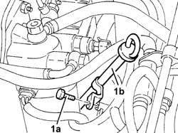
Applies to: engines: 1.9 JTD 8V; all production periods
7055B54 under-engine guard - r r
7055B64 Engine compartment DUST shield in front wheel arch (one), left or right - R.R.
1092G10 single engine belt r r
1076B50 exhaust pipe attachment to engine - r + r
1. Undo lower bolt (1a) of engine oil dipstick guide tube (1b).
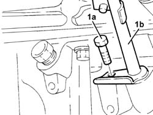
Applies to: engines: 1.9 JTD 8V; all production periods
1. Undo the fixing nut (1a) and bolt (1b) and remove the rigid power unit rear reinforcement (1c).
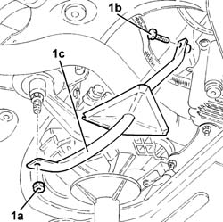
Applies to: engines: 1.9 JTD 8V; all production periods
1. Disconnect the electrical connection for the rpm sensor.
 | Name | Connector |
|---|---|---|
1 | RPM sensor |
2. Undo the retaining bolt (2a) and move aside the electrical wiring mounting bracket (2b).
3. Disconnect the electrical connections from the alternator.
| Name | Connector |
|---|---|---|
3 | Alternator |
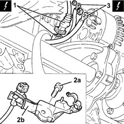
Applies to: engines: 1.9 JTD 8V; all production periods
1. Unscrew the nuts on the alternator bolts.
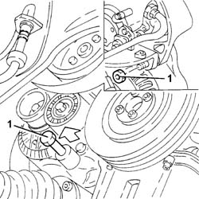
Applies to: engines: 1.9 JTD 8V; all production periods
1. Undo bolts (1a) and remove the rear alternator mounting bracket (1b).
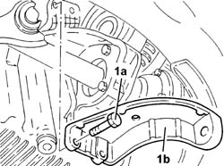
Applies to: engines: 1.9 JTD 8V; all production periods
Lower the vehicle.
Remove the guide tube complete with engine oil dipstick.
1. Unscrew nut (1a) securing the right side anti-roll bar joint to the lower fork and move bracket (1b) supporting ABS active sensor wiring (1c).
2. Unscrew nut (2a) and disconnect steering link (2b) from the right wheel strut using tool (2c).
 | Name | Country |
|---|---|---|
2c | Extractor | 1.821.169.000 |
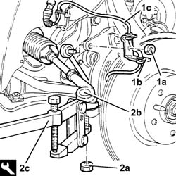
Applies to: engines: 1.9 JTD 8V; all production periods
1. Unscrew the bolts securing the right drive shaft to the intermediate drive shaft.
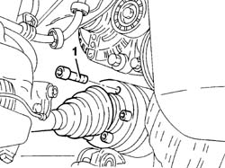
Applies to: engines: 1.9 JTD 8V; all production periods
1. Disconnect the brake pipes from the support plate.
2. Undo the bolt securing the front suspension lower damper connection fork to the lower wishbone.
3. Remove the brake pipe mounting plate.
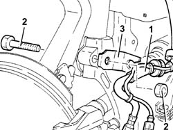
Applies to: engines: 1.9 JTD 8V; all production periods
1. Undo nut (1a) and disconnect upper wishbone (1b) from the wheel strut using tool (1c).
| Name | Country |
|---|---|---|
1c | Extractor | 1.821.169.000 |
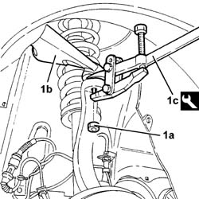
Applies to: engines: 1.9 JTD 8V; all production periods
1. Undo bolt (1a) and remove the lower right fork connecting the front suspension damper to lower wishbone (1b).
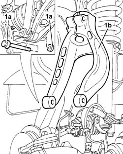
Applies to: engines: 1.9 JTD 8V; all production periods
Remove the right drive shaft from the intermediate drive shaft.
1. Undo the bolts (1a) and remove the intermediate drive shaft (1b).
2. Unscrew bolts (2a) and bolt (2b). Then remove intermediate drive shaft mount (2c).
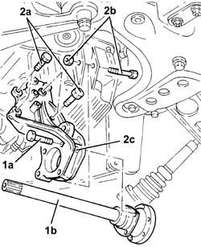
Applies to: engines: 1.9 JTD 8V; all production periods
Refitting
RemovingFit the intermediate drive shaft support and secure it by means of screws and bolt, to torque.
Fit the intermediate drive shaft and tighten the bolts fixing it to the support to torque.
 | Fastening | Component | Ø | Value (daNm) |
|---|---|---|---|---|
- | Bolt | INTERMEDIATE DRIVE SHAFT | M8 | 2.5 ÷ 2.8 |
Fit lower right hand fork connecting the front suspension damper to the lower wishbone and secure by tightening bolt to the specified torque.
| Fastening | Component | Ø | Value (daNm) |
|---|---|---|---|---|
- | Bolt | FRONT DAMPER FORK ON WISHBONE | M12 | 11.7 ÷ 12.9 |
Connect the upper wishbone to the wheel strut and secure by tightening the nut to the specified torque.
| Fastening | Component | Ø | Value (daNm) |
|---|---|---|---|---|
- | Nut | FRONT SUSPENSION TOP LEVER | M10 | 4.3 - 4.7 |
Replace the brake pipe mounting plate. Then tighten the bolt securing the lower fork to the damper to the specified torque.
| Fastening | Component | Ø | Value (daNm) |
|---|---|---|---|---|
- | Bolt | FRONT DAMPER FORK ON WISHBONE | M12 | 8.1 ÷ 8.9 |
Tighten the bolts securing the right drive shaft to the intermediate drive shaft to the specified torque.
| Fastening | Component | Ø | Value (daNm) |
|---|---|---|---|---|
- | Bolt | DRIVESHAFT | M10 | 4.0 - 5.2 |
Connect the steering link to the wheel strut and secure by tightening the nut to the specified torque.
| Fastening | Component | Ø | Value (daNm) |
|---|---|---|---|---|
- | Nut | ADJUSTABLE STEERING LINKS | M14 | 2.9 - 3.6 |
Refit the ABS active sensor wiring bracket. Then tighten the nut securing the joint between anti-roll bar and lower fork to the specified torque.
| Fastening | Component | Ø | Value (daNm) |
|---|---|---|---|---|
- | Nut | FRONT ANTI-ROLL BAR JOINTS | M10 | 3.8 ÷ 4.7 |
Refit the guide tube and engine oil dipstick.
Raise the car.
Fit the alternator rear bracket and secure it with bolts.
Tighten the alternator bolts to the recommended torque.
| Fastening | Component | Ø | Value (daNm) |
|---|---|---|---|---|
- | Bolt | ALTERNATOR ASSEMBLY | M10 | 4.3 ÷ 5.3 |
Connect the electrical connections to the alternator.
| Name | Connector |
|---|---|---|
- | Alternator |
Place the electrical wiring mounting bracket back in its seating and tighten the bolt.
Connect the electrical connection for the rpm sensor.
| Name | Connector |
|---|---|---|
- | RPM sensor |
Tighten the lower engine oil dipstick guide tube bolt.
Fit the rigid support reinforcement and secure it to the mounting and the cylinder block/crankcase.
Tighten the reinforcement retaining bolt and nut to torque.
| Fastening | Component | Ø | Value (daNm) |
|---|---|---|---|---|
- | Nut | POWER UNIT RIGID REAR SUPPORT REINFORCEMENT ROD.... | M12 | (Flexible mounting) 7.9 ÷ 9.7 |
| Fastening | Component | Ø | Value (daNm) |
|---|---|---|---|---|
- | Bolt | POWER UNIT RIGID REAR SUPPORT REINFORCEMENT ROD.... | M10 | (Cylinder block/crankcase) 4.5 ÷ 5.5 |
1076B50 exhaust pipe attachment to engine - r + r
1092G10 single engine belt r r
7055B64 Engine compartment DUST shield in front wheel arch (one), left or right - R.R.
7055B54 under-engine guard - r r
Tighten the upper engine oil dipstick guide tube bolt.
Connect the battery negative terminal.
Remove the car from the ramps.
Applies to: engines: 1.9 JTD 16V; all production periods
Removing
RefittingProceed with removal 4450B04 right front wheel r r .
Proceed with removal 7055B64 Engine compartment DUST shield in front wheel arch (one), left or right - R.R. .
Proceed with removal 7055B54 under-engine guard - r r .
Proceed with removal 4410A80 damper lower fork - r r .
Proceed with removal 2710A31 intermediate drive shaft - r r .
Proceed with removal 1016A10 sound-proofing cover - r + r .
Proceed with removal 1084A16 oil dip stick pipe - r r .
Proceed with removal 1092G10 single engine belt r r .
Proceed with removal 2710A32 intermediate drive shaft bearing support - r + r with intermediate drive shaft removed .
Applies to: engines: 1.9 JTD 16V; all production periods
Refitting
RemovingProceed with refitting 2710A32 intermediate drive shaft bearing support - r + r with intermediate drive shaft removed .
Proceed with refitting 1092G10 single engine belt r r .
Proceed with refitting 1084A16 oil dip stick pipe - r r .
Proceed with refitting 1016A10 sound-proofing cover - r + r .
Proceed with refitting 2710A31 intermediate drive shaft - r r .
Proceed with refitting 4410A80 damper lower fork - r r .
Proceed with refitting 7055B54 under-engine guard - r r .
Proceed with refitting 7055B64 Engine compartment DUST shield in front wheel arch (one), left or right - R.R. .
Proceed with refitting 4450B04 right front wheel r r .
Topics linked from this page (27)
- 0010T11 engine oil check level and top up
- 1016A10 sound-proofing cover - r + r
- 1072C44 exhaust manifold heat shield on bulkhead - r+r
- 1076B50 exhaust pipe attachment to engine - r + r
- 1076B82 left exhasust pipe between catalytic preconverter and converter r r
- 1076B84 right exhaust pipe between caralytic preconverter and converter r r
- 1080B39 right catalytic preconverter r r or replace cylinder head gasket
- 1080B40 catalytic pre-converter - r r
- 1080B62 catalytic converter - r + r
- 1084A16 oil dip stick pipe - r r
- 1084B34 cartridge engine oil filter support - r + r
- 1092G10 single engine belt r r
- 2710A31 intermediate drive shaft - r r
- 2710A32 intermediate drive shaft bearing support - r + r with intermediate drive shaft removed
- 4410A80 damper lower fork - r r
- 4450B04 right front wheel r r
- 4450B10 Front WHEEL (one) - R.R.
- 5040A10 Air conditioning refrigerant CIRCUIT - Draining and Refilling
- 5540B76 Front LIGHT CLUSTER with fog light (one), left or right - R.R. with interfering components removed
- 7025A34 bonnet lid lock (one) - r+r or repair
- 7055B42 Additional FRONT WHEEL ARCH (one), left or right - R.R.
- 7055B54 under-engine guard - r r
- 7055B64 Engine compartment DUST shield in front wheel arch (one), left or right - R.R.
- 7210A15 R.R. HEADLAMP HOUSING/FRONT WING CROSSMEMBER
- 7210E10 R.R. CENTRE PILLAR
- A10 Alternator
- K46 RPM sensor
Topics that link to this page (6)
- 1020A20 crank case oil sump - r + r clean seals for sealant application
- 1020D14 front crank shaft oil seal cover - r + r and replace seals for versions with oil pump on crank shaft, timing side
- 1020D30 oil seal cover, fly wheel side - r + r and replace seals
- 1028H20 piston with connecting rod - r r
- 1060E40 supplementary pressure pump - r r
- 1084B26 emgine oil intake duct - r r